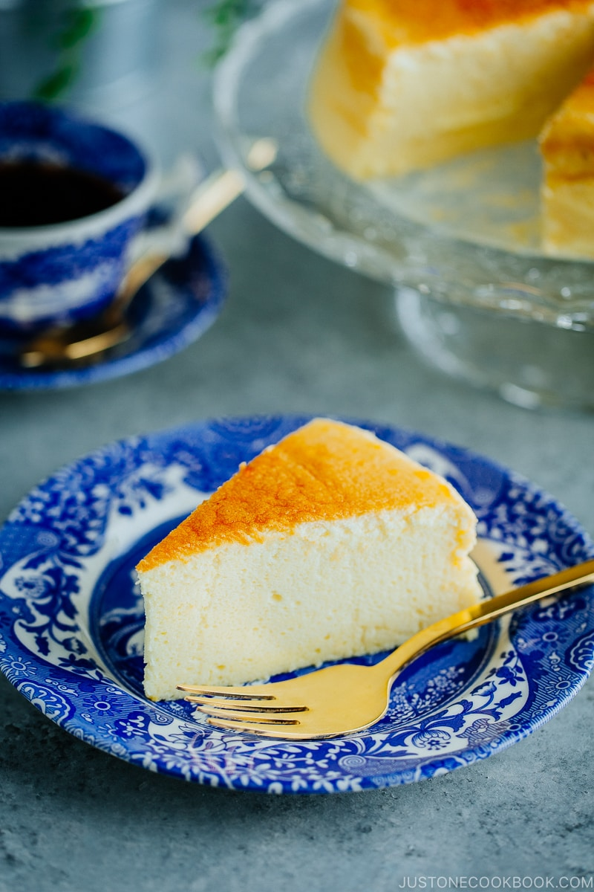

Fluffy Japanese-Style Cheesecake

Fluffy, jiggly, airy cheesecake.
Japanese cheesecake (also goes by soufflé cheesecake) is a glorious dessert known for its ultra-creamy, super luxurious, slightly tangy flavor and airy, soufflé-like character. It has swept the food world by storm and almost every dessert fanatic goes wild for it.
With elements of both a rich velvety custard and a cottony sponge cake, the dessert simply hits all the right notes. It is not heavy and a lot less sweet than typical Western-style cheesecakes. Even those who are not into cheesecake will fall head over heels for this delicious treat.
Ingredients
- 5 large eggs
- 1/4 teaspoon cream of tartar
- 1/2 cup sugar , divided
- 8 oz cream cheese, at room temperature
- 1/2 cup low-fat milk
- 1/4 cup unsalted butter, at room temperature
- 1 tablspoon lemon juice
- 1/4 cup all-purpose flour
- 2 tablespoons corn starch
Steps
- Line the bottom and side of the 8-inch round springform pan with parchment paper. Wrap the springform pan with several sheets of foil, sealing it completely.
- Fill a large baking pan halfway with water. Place it in the oven on the lowest rack. Preheat the oven to 315 F (157 C).
- Separate the eggs and place the egg whites into a mixing bowl and the yolks into a measuring cup.
- Beat the egg whites on Low speed for 30 seconds. Increase the speed to Medium Low and beat for another 30 seconds or until foamy. Add the cream of tartar. Increase the speed to Medium High and beat until the egg whites just start to thicken. Add 1/4 cup sugar gradually. Continue beating until the egg whites reach the soft peaks stage (approximately 3 minutes using a stand mixer).
- In a separate bowl, add the cream cheese and milk. Mix on Low speed until creamy and smooth (approximately 2-3 minutes). Add the butter, remaining 1/4 cup sugar and lemon juice and beat for 1 minute. Add the flour and corn starch and mix for another minute. Finally add the egg yolks and mix for 1 more minute. Strain the batter using a sieve.
- Add 1/3 of the egg whites and gently fold into the batter until mostly incorporated. Add another 1/3 and gently fold. Add the remaining 1/3 and gently fold.
- Pour the batter into the lined springform pan. Spread the batter evenly into the pan and smooth out the top using a spatula. Holding the side of the pan, gently lift and drop the pan on the counter about 6 times to remove any big air bubbles.
- Place the springform pan into the water bath and bake the cake for 1 hour and 10 minutes. Check the cake for doneness by inserting a toothpick into the center of the cake. (It should come out clean.) Bake the cake for an additional 10-15 minutes to brown the top.
- Turn off the oven and open the oven door slightly (about 2-3 inches) and let the Cotton Cheesecake cool in the oven for 1 hour.
- Remove the Cotton Cheesecake from the pan. Place on a plate and refrigerate for at least 4 hours.
- Serve with fresh fruit, fruit puree, chocolate sauce, whipped cream, etc.
- Cover and refrigerate any remaining portions. Enjoy the Cotton Cheesecake within the week.